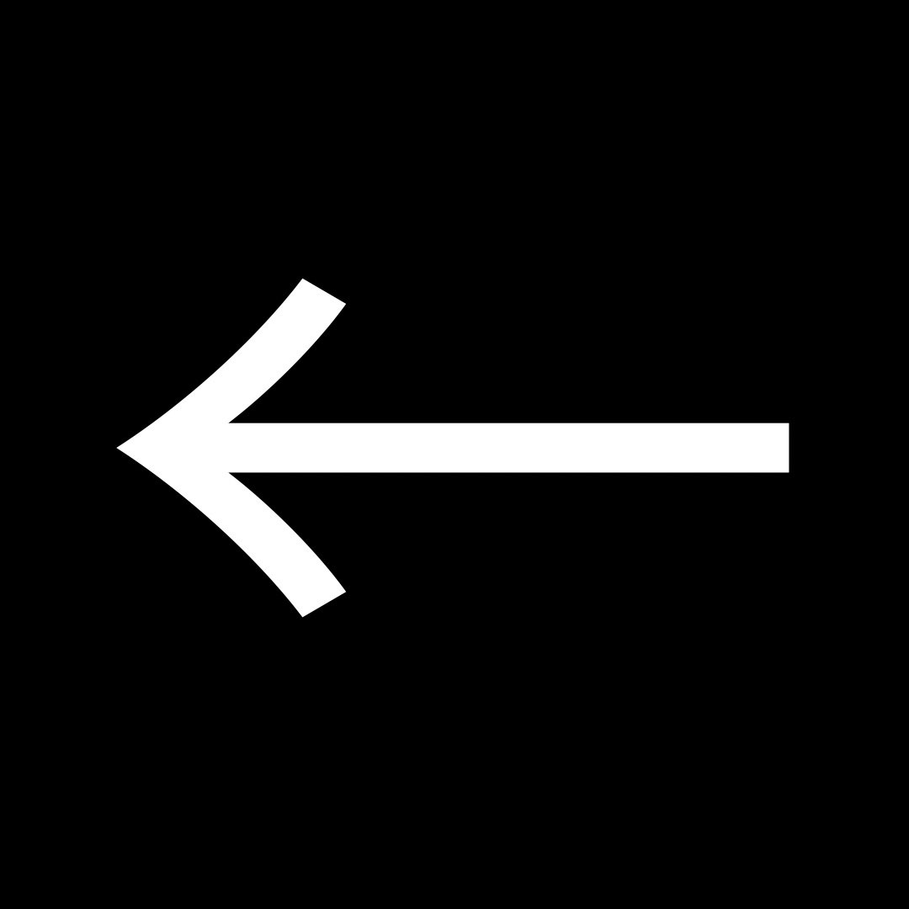

|
Le japonais Astroscale choisit
Toulouse pour son centre de satellites “nettoyeurs” de l’espace |
|
|
À Toulouse, la filiale Japonaise Astrocale prévoit d'installer
des infrastructures d'assemblage, d'intégration et de test en vue de
concevoir des satellites de nettoyage. Ceux-ci seront en charge de
nettoyer les objets en orbite autour de la Terre et de
récupérer les débris spatiaux. |